Jean-Pierre — The AI PM Copilot 🎩¶

"I don't just show you data — I understand your projects."
Jean-Pierre is the Project Management flavor of AgentOS — a local-first AI copilot that connects your GitHub, Jira, and documentation into one real-time, intelligent command center for every project you manage.
The Problem¶
Project managers juggle 5–10 tools daily. Context-switching between GitHub, Jira, Docs, Slack, and spreadsheets wastes 30% of productive time. Critical signals get buried in notification noise. No single view tells you: "How is my project actually doing?"
The Solution¶
Jean-Pierre eliminates the noise. He connects to your GitHub repos, Jira boards, and team channels — synthesizes everything into a premium intelligence dashboard — and generates boardroom-ready reports, risk analyses, and sprint plans on the fly. All through natural language. All running locally on your machine.
🤖 AI Chat & Planning¶

Jean-Pierre's Living View puts the AI agent at the center of your project universe. Ask anything in natural language — "Give me a full status report" — and watch JP plan, execute tools, and synthesize a structured response in real-time. Quick-action pills (Standup, Status, Blockers, Sprint, Report) let you trigger common workflows with one click.
📁 Projects¶

Your command center starts here. Each project card shows connected integrations (GitHub, Jira), tech stack tags, and quick-access buttons for Status, PRs, and Issues. Add new projects in seconds and switch between them instantly from the sidebar.
📊 Command Center Dashboard¶

The Classic View is a premium, 24-card bento-grid dashboard that gives you a complete picture of every project at a glance. Includes Quick JP Analysis prompts, Production Pipelines (Weekly Report, Risk Assessment, Standup, Sprint Planning), Actionable Alerts with AI Auto-Fix, Open PRs list, Commit Activity charts, PR Timeline, and a Pinned Insights carousel of past AI analyses. Every card is interactive — click "Ask JP" on any widget for instant AI analysis.
📈 Velocity Charts¶
8-week stacked bar charts of commits per author. Spot slowdowns and capacity issues instantly.
🌡️ Contribution Heatmap¶
26-week contribution heatmap per author — understand commit intensity and engagement patterns at a glance.
📅 Smart Gantt¶
Auto-generated timelines derived from real PR activity and sprint data. Interactive filter tabs and proper empty states.
🏆 Team Leaderboard¶
Gamified contributor ranking — commit streaks, PR merge rate, and badges (🔥🥇👑). Celebrate your top performers.
🗺️ Mind Map¶
Visual dependency graph of Jira issues, epics, and relationships. See the big picture of your project structure.
📊 KPI Cards¶
Open PRs, issues, commits, stars — dynamic labels that auto-adapt based on the selected date range.
✨ Living View¶

Not a static dashboard — a living, breathing project surface. JP's orbital view puts the agent at the center with live metrics orbiting around it: Sprint progress, KPIs, PRs, Risk score, Team, Gantt, Insights, and Actions. A continuously-updated health score tells you instantly if your project is on track. Click any orbital node to drill in or ask JP directly.
🧠 AI Intelligence¶
🎯 Risk Radar¶
Real-time 0–100 risk score computed from stale PRs, no-reviewer PRs, low velocity, sprint lag, and open blockers. Spot trouble before it becomes a crisis.
🧠 JP Memory¶
Autonomous long-term memory. Jean-Pierre auto-extracts facts, team structures, preferences, and corrections from every conversation. He learns and improves with every interaction.
🎯 Action Center¶
Centralized risks, AI-generated recommendations, and a checkable task list with real-time progress tracking. Your cockpit for what to do next.
📅 Sprint Planner¶
JP generates data-driven sprint plans from live Jira + GitHub backlog data. Refine tasks interactively, adjust scope — plan smarter, ship faster.
🔨 Sprint Forge¶
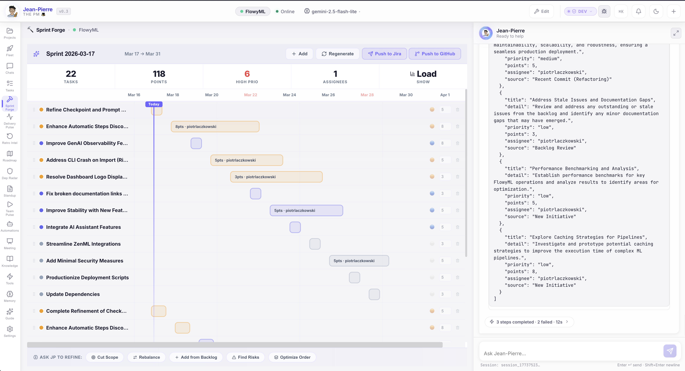
Plan sprints with AI intelligence. Sprint Forge pulls live backlog data from Jira and GitHub, analyzes team velocity, and generates optimized sprint plans. Adjust scope, reassign tasks, and refine estimates — all within a single, focused interface. JP suggests task priorities and flags capacity risks before you commit.
📡 Delivery Pulse¶
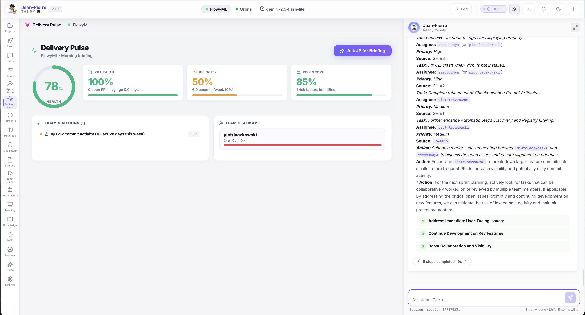
Track delivery health in real-time. Delivery Pulse visualizes project velocity, milestone progress, and completion trends across sprints. Spot delivery risks early with AI-powered burndown analysis and proactive alerts when timelines slip. Your single view for answering "Are we going to ship on time?"
🔄 Retro Intelligence¶
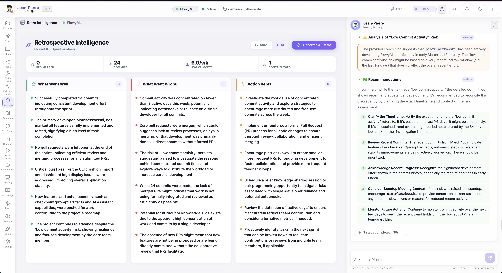
Retrospectives powered by data, not opinions. JP analyzes sprint metrics, PR patterns, commit activity, and blockers to generate structured retrospective reports. Get AI-driven insights on what went well, what needs improvement, and concrete action items — all backed by real project data.
🗺️ Roadmap¶
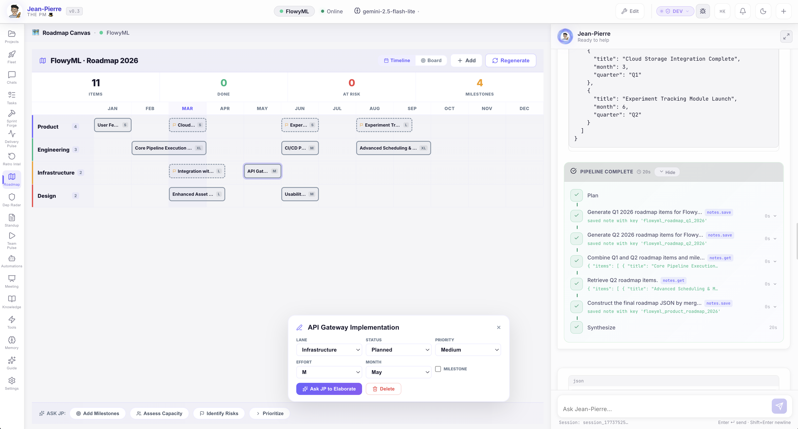
Visualize your project trajectory. The Roadmap view displays milestones, release targets, and key deliverables on an interactive timeline. Drag, adjust, and share with stakeholders. JP can auto-generate roadmaps from your sprint data and Jira epics.
🔗 Dependency Radar¶
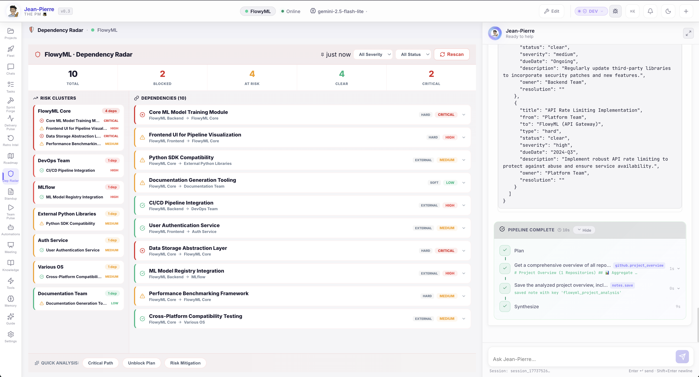
See what blocks what — before it blocks you. Dependency Radar creates a visual map of cross-project dependencies, upstream/downstream relationships, and critical-path items. AI highlights high-risk dependency chains and suggests mitigation actions. No more discovering dependency conflicts in standup meetings.
📋 Standup Scribe¶
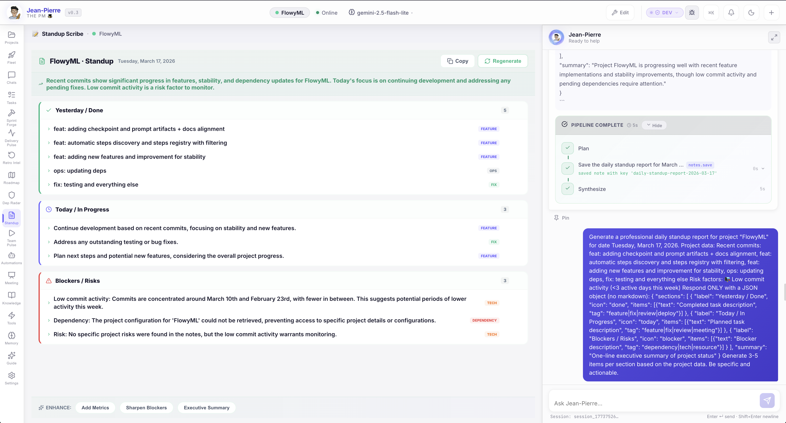
One-click standups, zero manual effort. JP generates a professional daily standup from real commit, PR, and sprint data — structured into Yesterday / Done, Today / In Progress, and Blockers / Risks sections. Each item is tagged (FEATURE, FIX, OPS, TECH, DEPENDENCY) and the full report is auto-saved as a project note. Enhance with one-click buttons: Add Metrics, Sharpen Blockers, Executive Summary.
👥 Team Pulse¶
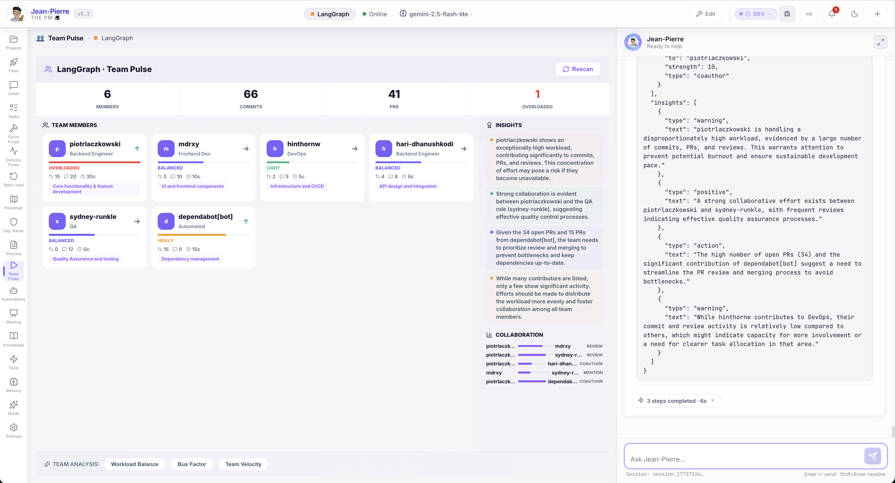
Understand your team's real capacity. Team Pulse shows every contributor with their role, workload status (Balanced, Overloaded, Light, Heavy), commit/PR/review counts, and focus area. The Insights panel provides AI-generated warnings about burnout risks, collaboration patterns, and actionable recommendations. The Collaboration graph visualizes who reviews whom. Quick analysis buttons: Workload Balance, Bus Factor, Team Velocity.
🛸 Fleet Intelligence¶
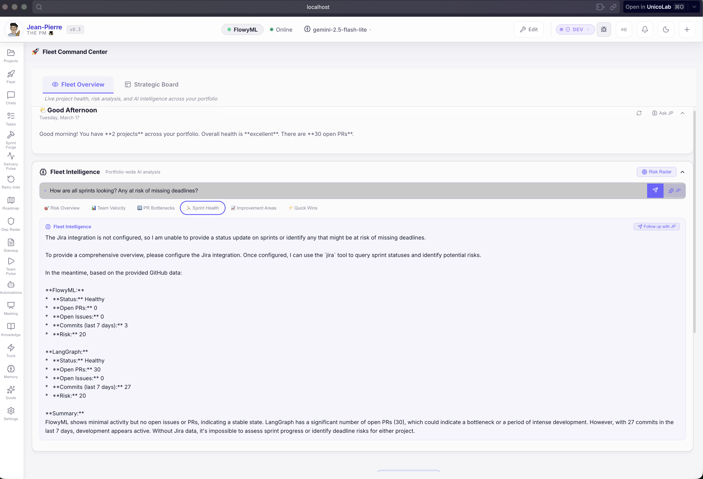
Managing multiple projects? Fleet Intelligence gives you a portfolio-wide command center with a daily greeting, overall health summary, and an AI-powered query bar for asking cross-project questions. Tabs for Risk Overview, Team Velocity, PR Bottlenecks, Sprint Health, Improvement Areas, and Quick Wins let you drill into any dimension. The Risk Radar button triggers a full portfolio risk scan.
🎯 Strategic Board¶
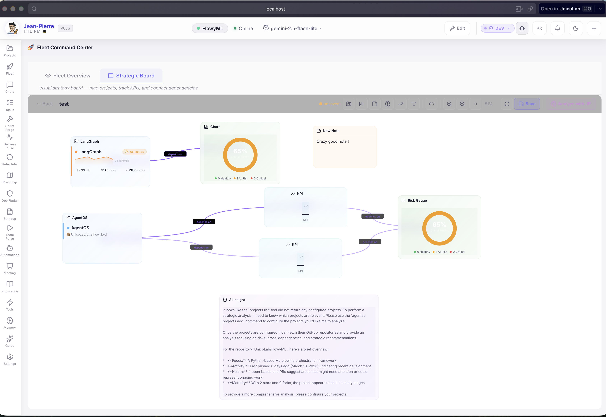
Your portfolio on a canvas. The Strategic Board is a free-form visual workspace where you can place project cards, KPI widgets, charts, risk gauges, notes, and dependency links. Map your entire portfolio, track cross-project KPIs, and connect dependencies visually. AI Insight provides strategic analysis of your project landscape. Save multiple boards for different stakeholder views.
✅ Tasks¶
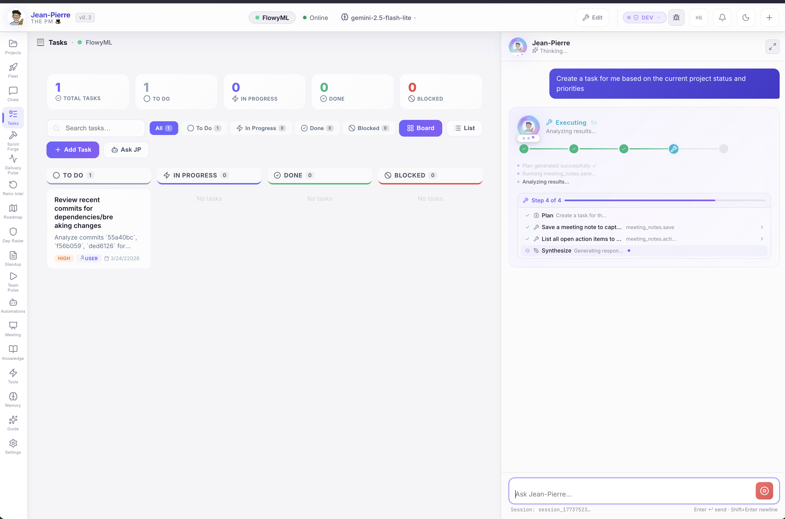
AI-powered task management. The Tasks view is a full Kanban board (To Do → In Progress → Done → Blocked) with search, filtering, and status counters. Ask JP to "Create a task based on the current project status and priorities" — he'll analyze commits, PRs, and risks, then auto-generate prioritized tasks with descriptions, priority tags, and assignees. The AI execution pipeline is fully visible in the sidebar.
⚡ Automation Hub¶
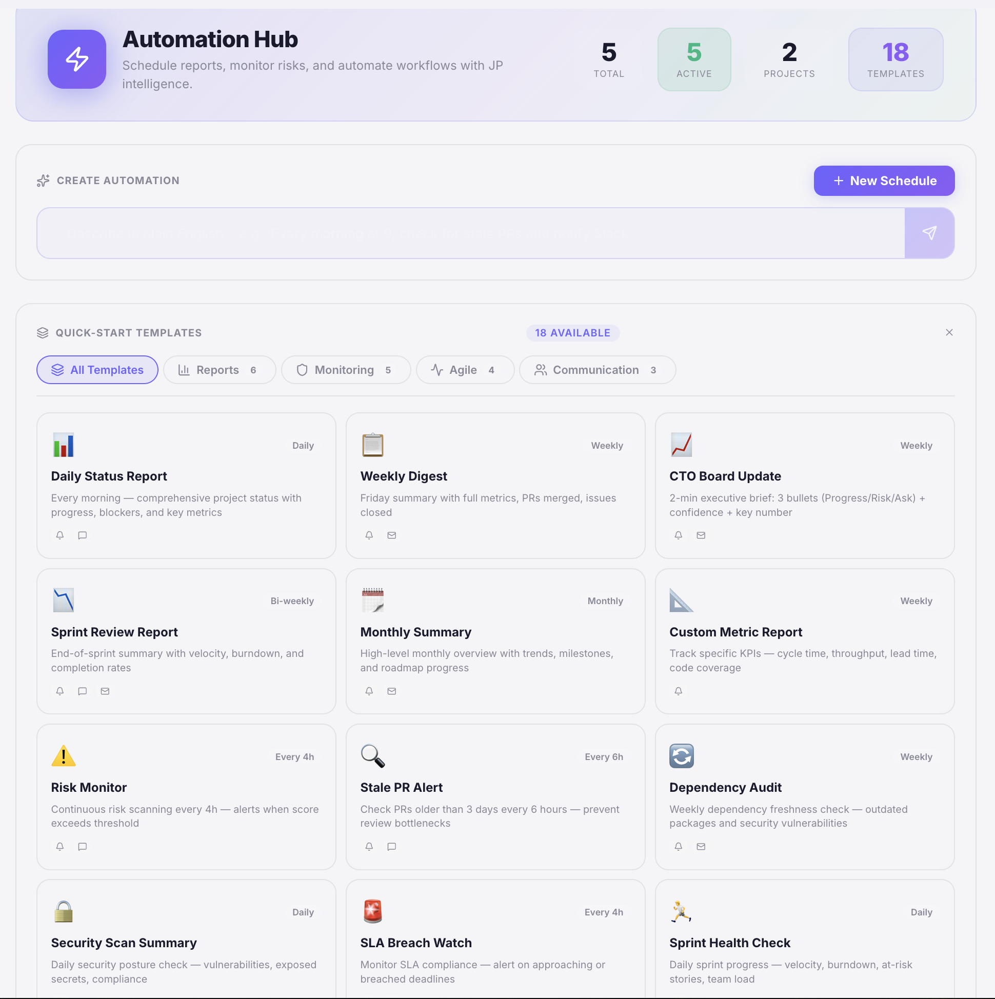
Put JP on autopilot. The Automation Hub provides 18 ready-to-use templates across four categories: Reports (Daily Status, Weekly Digest, CTO Board Update, Sprint Review, Monthly Summary, Custom Metrics), Monitoring (Risk Monitor, Stale PR Alert, Dependency Audit, Security Scan, SLA Breach Watch), Agile (Sprint Health Check, Sprint Review, Dependency Audit, Sprint Health Check), and Communication (Slack Standup, Team Digest, Stakeholder Update). Create custom schedules with natural language or use the + New Schedule button. Each automation runs on your configured cadence — daily, weekly, bi-weekly, or custom intervals.
🐙 Integrations¶
GitHub¶
Multi-repo: PRs, commits, issues, contributor activity, webhooks — aggregate across all repos into one view. Setup Guide →
Jira¶
Multi-board: sprint status, issue tracking, backlog management — aggregated across all configured boards. Setup Guide →
Slack¶
One-click standup reports posted directly to any Slack channel via webhook. Keep your team in the loop without lifting a finger. Setup Guide →
AIFlow Sync¶
Connect to AIFlow for centralized intelligence, advanced analytics, and multi-agent orchestration across your organization. Learn More →
⚡ Productivity Arsenal¶
⌘K Command Palette¶
Spotlight-style search across all commands. Navigate, trigger actions, ask AI — all from a single keyboard shortcut.
💡 Quick Prompts¶
6 one-click PM prompt pills — blockers, bottlenecks, sprint health, standup report, risk analysis, and more. Instant answers.
📝 Meeting Notes¶
AI-generated meeting minutes with structured action item tracking, searchable meeting history, and follow-up management.
📰 Daily Brief¶
Automated 9AM project summaries — or generate on demand. Every morning starts with a clear picture of the day.
📄 PDF Export¶
Export any dashboard to PDF — pixel-perfect reports ready for stakeholder meetings and executive reviews.
📝 Project Notes¶
Auto-saving markdown scratchpad per project. Persisted locally, always available. Your project's living notebook.
⛓️ Action Chain — Full Transparency¶
Watch exactly how Jean-Pierre works. Every tool call is visualized as an expanding chain with:
- 🔧 Tool arguments displayed as formatted JSON
- 📤 Full output from each step
- ⏱️ Per-step timing so you can see how long each operation took
No black boxes. Complete transparency into every AI decision.
Quick Actions¶
Jean-Pierre comes with pre-configured one-click workflows tailored for Project Managers:
| Action | What it does |
|---|---|
| 📊 List Projects | Show all tracked projects with repos and Jira keys |
| 📋 Standup Report | Generate a structured standup with metrics and risks |
| 🔍 Sprint Status | Current sprint progress across all projects |
| 📈 Project Progress | Commit activity, sprint metrics, milestones, risks |
| 🏗️ Sprint Burndown | Task completion timeline and analysis |
| 📅 Sprint Planner | AI-generated sprint plans from live backlog data |
| 🎯 Action Center | Centralized risks and AI-recommended next steps |
| 📤 Sync to AIFlow | Push comprehensive report to AIFlow platform |
| 📝 New Meeting Note | Create structured meeting minutes with action items |
| 📋 Meeting Actions | Show all open action items from meetings |
| 💬 Slack Standup | Post standup report to Slack channel |
| 📰 Daily Brief | Generate automated project summary |
🏗️ Structured Intelligence¶
Jean-Pierre doesn't just output text. He generates interactive, data-rich components from your live project data:
- :::report — Deep-dive standups with velocity metrics and risk breakdown
- :::milestones — Visual release timelines and key tracking dates
- :::gantt — Live sprint task breakdowns and burndown analysis
🔒 Private by Design¶
Jean-Pierre runs entirely on your machine. Conversations, project data, meeting notes, and memories — everything stays local in an encrypted SQLite database. No cloud storage, no third-party analytics. Your project intelligence is yours alone.
Learn more about our security model →
Who is it for?¶
👨💼 Engineering Managers¶
Real-time team velocity, PR throughput, contribution heatmaps, and risk radar for every project in your portfolio.
📋 Technical PMs¶
Automated reporting, sprint planning, cross-team coordination, and boardroom-ready executive summaries in seconds.
💻 Freelance Developers¶
Manage multiple client project hubs with ease. Fleet View keeps every project at your fingertips.
🚀 Startup CTOs¶
Enterprise-grade project intelligence on your local machine — without the enterprise price tag.